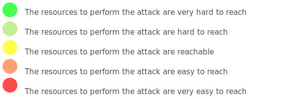

How to fill the Likelihood matrix ?
To compute the likelihood of a threat, link it to a likelihood matrix that associates a level of danger to each criteria below.
To fill the matrix, select a dot on each line from "not dangerous"(green) to "extremely dangerous"(red).

Threat actors : the level of skills needed to perform the attack

Window of opportunity : available time to perform the attack

Vulnerabilities : easiness to create new vulnerabilities is the system

Security controls : efficiency of the methods used to prevent the attack